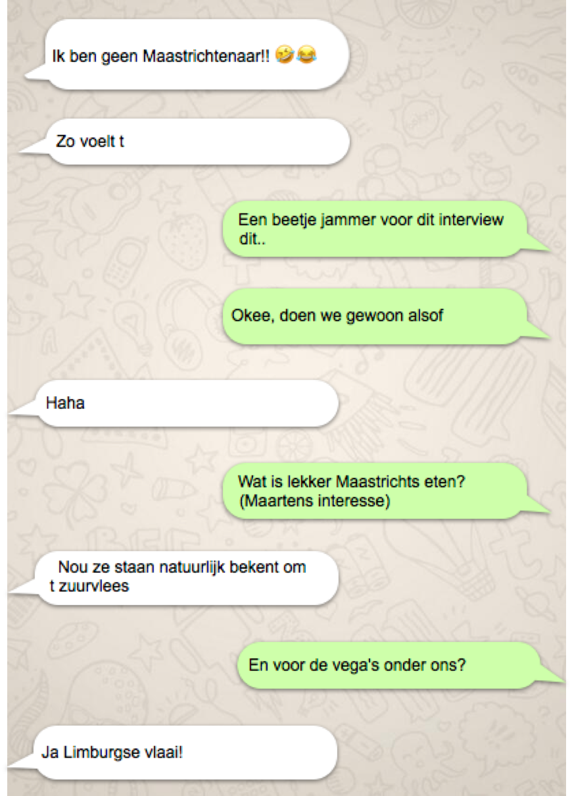
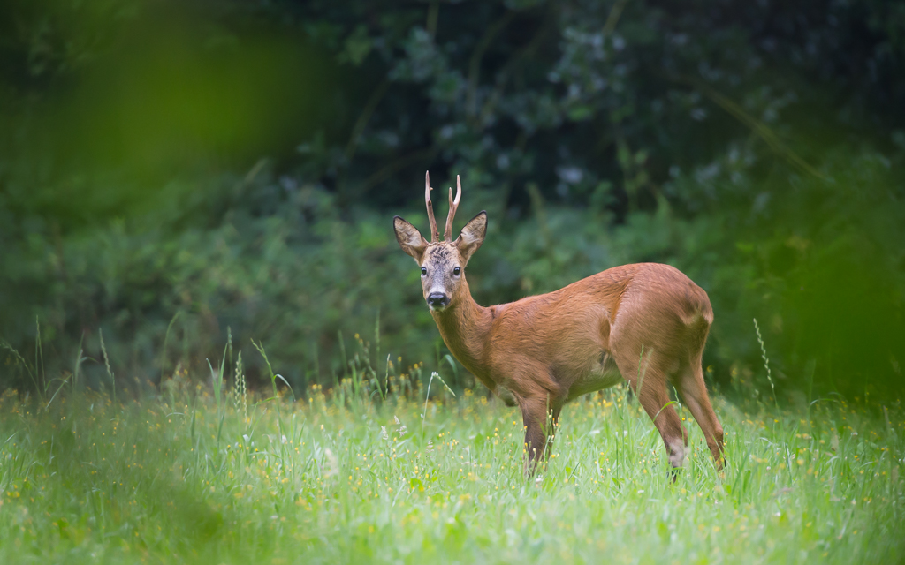

sudoku
zoeker
camping
schema
routes
Dag 1
Dag 2
Dag 3
Dag 4
informatie
Nationaal Park De Hoge Kempen
Om optimaal te kunnen genieten van dit mooie weekend moet je eigenlijk wel weten waar je . Als je een beetje lui bent: hier volgt er een algemene introductie. Kun je toch een beetje meepraten.
(Dit is een beetje vanuit mijn perspectief geschreven – ik stap altijd maar in en zie wel waar we heen gaan. Misschien niet zo herkenbaar, maar ach). De Hoge Kempen liggen dus in België. Waar dan? In de Belgische provincie Limburg, zo ongeveer tegen Nederlands Limburg aan. Kijk maar op het kaartje hierboven.
Wat is er te zien in De Hoge Kempen?
Natuur! In al haar glorie! Het park is ongeveer 5700 ha groot (dat is dus 57 km2, voor als je ook nooit weet wat ha ook alweer betekent) en is geopend in 2006. De meest voorkomende biotopen zijn naaldbossen en heide. Daarnaast zijn er loofbossen, landduinen, vennen, beken, droogdalen, vijvers, grindplassen en mijnsteenbergen (ik weet ook niet wat dat precies zijn maar als je dat echt wilt weten moet je denk ik verderop in t boekje kijken, of aan iemand vragen?!). In deze wildernis leven natuurlijk allerlei zeldzame en bijzondere dieren en plantjes. Oja? Wat dan? Nou… jeneverbes, gaspeldoorn, rode dopheide, gagel, moeraswolfsklauw, beenbreek, libellen, heideblauwtje, koninginnenpage, veldparelmoervlinder, heikikker, rugstreeppad, gladde slang, levendbarende hagedis (wajo!), beekprik, zwarte specht, nachtzwaluwen en reeën.
Vind ze allemaal! (Succes)
Moet ik nog meer weten?
JA!En nu om je heen gaan kijken (of verder lezen, mag ook hoor)! Veel plezier!
maas-tricht
Mestreech
Maastricht!! Mosae Trajectum: de doorwaadbare plaats in de Maas. Een middeleeuwse stad vol interessante geologie, flora&fauna, vlaai waar de zoete geur van Luikse (?) wafels je continu tegemoet komt.
Maar hoe is het nou om in Maastricht te wonen? Waar kan je het beste eten? Wat kan je het beste zeggen? En niet geheel onbelangrijk: de beste plantjes vinden? Onze correspondente vroeg het in een exclusief interview met een antropologe wonende te Maastricht.
Enne... Krijg je na dit interview zin in lekker eten? Tijdens dit interview bood onze antropologe een lijst aan met goede etensplekjes in Maastricht:
Limburgse vlaai zonder zitplaats:
Matthieu Hermans
Limburgse vlaai met zitplaats:
Bisschopsmolen
Chocolademelk:
Chocolate Company
Maastricht goes hipster:
Fish and chips: Jack Whites Burger: Burgerlijk Wraps: Johnny Wrap Eten in een brandweerkazerne
Enne... Wil je nog altijd een Mosasaurus zien? Ga dan naar het Natuurhistorisch Museum in Maastricht. Ook leuk: in Utrecht is een bijzondere collectie te vinden van Mestreechse carnavalsposters van de laatste jaren. Deze collectie is speciaal bewaard ter ere van Maastrichtenaar dr. ir. Fons Cremers. Ook benieuwd? Bezoek dan de vijfde verdieping in het Hugo Kruytgebouw op Padualaan 8 te Utrecht. Toegang is gratis.
Haije!
Interview
Donald Trump
politiek
- POLITIEKE UPDATE HOGE KEMPEN -
Executive summary
- Scheiding van machten is in Maasmechelen geen prioriteit. Daarom het advies om ten allen tijden de Belgische Grondwet bij u te dragen.
- Burgemeester Raf Terwingen ("Rafje" voor zijn vrienden) en een roedel grijze wolven zijn in de nabijheid van de Hoge Kempen gesignaleerd.
- Indien u grijze wolven ziet, kunt u beter de andere kant op rennen! Raf is dan mogelijk ook in de buurt.
Achtergrondinformatie
First things first: De Hoge Kempen vallen onder de gemeente Maasmechelen. Een uiterst idyllische plaats met maar liefst 37.696 inwoners. In tegenstelling tot Nederland heeft een Belgische gemeente geen wethouders maar zogenaamde schepenen. Er is in België dus ook een College van Burgemeester en Schepenen. Om de lezer zo goed mogelijk voor te bereiden op de uiterst precaire politieke situatie rondom De Hoge Kempen zullen we een aantal eigenaardigheden van het College van Maasmechelen onder de loep nemen.
Scheiding van machten in Maasmechelen geen prioriteit
Het is een bekend principe: de Trias Politica. Het opdelen van de macht in drie gedeelde machten: wetgevend (bijv. De Tweede Kamer, gemeenteraad), rechtsprekend (rechters) en uitvoerend (Het Kabinet en de ministeries, College van Burgemeester en Wethouders). Het idee achter deze scheiding is het voorkomen van machtsmisbruik en bijvoorbeeld het snel overnemen van de staat door een dictatuur. Deze deling van machten is over het algemeen ook in bijvoorbeeld Amerika goed geregeld; dat is dan ook een van de redenen waarom Donald Trump zijn zin niet altijd even makkelijk doorgedrukt krijgt. Rechters bestempelen zijn decreten als zijnde in strijd met de grondwet en De Donald kan daar vervolgens niets meer aan doen.
Democratie is misschien niet de beste, maar in ieder geval de minst slechte staatsvorm. En het scheiden van machten is daarin al eeuwenlang een best practice. Des te verbazender dat we het volgende kunnen teruglezen op de website van Maasmechelen:
"De gemeenteraad vertegenwoordigt de gehele bevolking van de gemeente en bestaat uit 33 leden. Ook de burgemeester en de schepenen maken deel uit van de gemeenteraad."
De burgemeester van Maasmechelen heeft er het volgende over te zeggen:
"Als er in Nederland iets verboden wordt, komen de problemen hier omhoog."
Inderdaad, is onze conclusie dan ook. Het tegelijkertijd uitvoeren van meerdere politieke machten is Nederland al jarenlang verboden, maar de problemen vind je in Maasmechelen makkelijk terug. Conclusie: scheiding van machten in Maasmechelen geen prioriteit.
Ons advies aan de lezer: zorg dat u altijd een kopie van Belgische Grondwet op zak draagt. Of u daarvan de Vlaamse of Waalse versie kiest is verder aan u.
Raf Terwingen
Rafje en de Grijze Wolven
Een volgende wending in dit verhaal vinden we in de persoon van Raf Terwingen. De heer Terwingen ("Rafje" voor zijn vrienden) is lid van de partij CD&V en tevens burgemeester van de gemeente Maasmechelen. Het feit dat hij naast burgemeester en gemeenteraadslid ook tegelijkertijd lid is van de Tweede Kamer van België laten we maar even achterwege om de nadruk te kunnen leggen op een belangrijker verhaal.
Grijze wolven
Recentelijk raakte Raf in opspraak omdat hij bij een theekrans-sessie van de Grijze Wolven zou zijn aangehaakt. De Grijze Wolven (Turks: Bozkurtçular) is een extreemrechtse Turkse groepering. De Grijze Wolven staan bekend om hun racistische uitspraken en criminele activiteiten. Slecht nieuws dus voor Raf. De gemeenteraad heeft aangegeven de burgemeester "aan te zullen spreken" op zijn aanwezigheid. Of dat eufemistisch bedoeld is, is de schrijvers van dit stuk niet bekend.
Ook ditmaal kunnen we kort zijn in ons advies: indien u Raf of een grijze wolf ziet, kunt u maar beter de andere kant op rennen. U bent gewaarschuwd!
geologie
Het landschap van de Hoge Kempen
De Maas zette deze grote puinkegel in het Mindelglaciaal (465 tot 418 duizend jaar geleden) af. Daarna ontstond een nieuwe, relatief diep uitgesleten vallei waar de Grensmaas zich een weg zocht door haar eigen puin. De overgang van de Maasvallei naar het Kempens Plateau is erg steil en vormt een trap van gemiddeld 45 meter. Deze steilrand loopt van Opoeteren (Maaseik) in het noorden tot Gellik (Lanaken) in het zuiden, en vormt een ononderbroken lijn van ruim 20 kilometer lang, één van de spectaculairste geologische fenomenen in het vlakke Vlaanderen. Ongeveer de helft van deze steilrand situeert zich in het Nationaal Park Hoge Kempen. Bij Gellik bereikt het plateau een hoogte van 103 m terwijl het in Lommel 50 m boven de zeespiegel ligt.
Samenstelling van de bodem en Pleistocene vegetatie
In het zuidelijk deel treft men hoofdzakelijk grind en grof zand aan, in het noordelijk deel zand. Het is grotendeels bedekt met een sediment. Dit is een dekzandlaagje aangevoerd door de wind in aanwezigheid van sneeuw en afgezet, met een afwisseling van zand en sneeuwlaagjes. Als we goed zoeken kunnen we dus nog sneeuwballen gooien.
Er volgde een vegetatiearme periode in het Laatglaciaal (14.000 jaar vChr). Tijdens het Boreaal, het Atlanticum en een deel van het Subboreaal (tot 2400 jaar vCHr) was het plateau bedekt met wouden. De samenstelling van die wouden schommelde in functie van het heersende klimaat. Tijdens het Subboreaal zette de ontbossing in ten gevolge van menselijke activiteiten die in het Subatlanticum leidde tot een grote, bijna boomloze vlakte. Daarin was heide prominent aanwezig.
Het plateau werd in de 19e eeuw kunstmatig bebost met naaldhout en meer specifiek de grove den, vooral voor de steenkoolontginning in het Kempens Steenkolenbekken.
Heidelandschappen komen nu nog enkel voor in de natuurreservaten (onder meer De Maten in Genk, de Teut in Zonhoven, Tenhaagdoornheide in Houthalen) en in de grote militaire domeinen.
Erosie
Het Kempens Plateau heeft de erosie overleefd door de dikke grindlagen die de Maas tijdens het Neogeen uit de Ardennen heeft aangevoerd. Lokale rivieren (dus niet Maas en Schelde) die tijdens het Vroeg Pleistoceen sediment naar het Noorden afvoerden hebben in Nederland de Formatie van Stramproy afgezet.

Zicht vanuit het Kempensplateau naar de Vallei van Ziepbeek
Intro-ductie
Introductie
De naam 'De Hoge Kempen' doet vermoeden dat we voor Nederland iets bijzonders gaan zien. Zoveel 'hoogs' hebben we niet in Nederland. Bovendien ligt het gebied in een plek buiten onze landsgrenzen, althans sinds 1831, en dat belooft ook veel nieuws. In dit stuk wat informatie over de vegetatie (de algemene structuur gevormd door de dominerende plantensoorten zoals bomen en struiken) en flora (typerende en bijzondere plantensoorten) zoals we die kunnen verwachten. Om een goede inschatting en verklaring van de vegetatie en flora te kunnen geven moet er eerst iets gezegd worden over de ondergrond van- en menselijke invloed op het gebied.
De naam van het park de Hoge Kempen wordt ontleend aan het feit dat een groot deel van het park een stuk hoger ligt dan de omgeving, en zeker hoger dan menig stukje Nederland. Het ligt namelijk op het zogenaamde 'Kempensplateau', een plateau dat 90 tot wel 103 meter boven zeeniveau ligt. Honderd-en-drie meter hoogte boven zeeniveau klinkt misschien niet erg hoog in vergelijking met bijvoorbeeld de bergen in de Alpen, maar we zullen zien dat we met deze geringe hoogte al plantensoorten zullen treffen die zich meer thuis voelen in bergen dan op het platteland zoals Nederland.
De ontstaansgeschiedenis van dit Kempensplateau lijkt eigenlijk erg op die van de dalen en plateaus in Zuid-Limburg. Voor een gedetailleerde uiteenzetting van deze geschiedenis wordt de lezer verwezen naar het epos over het ontstaan van het Kempensplateau hier aanwezig in dit Veldweekend boekje, geschreven door weledelzeergeleerde heer Sander H. van Schaik MSc. en weledelzeergeleerde mejuffrouw Anique Henderson MSc. Wij volstaan hier met een korte samenvatting.
Ontstaan van het Kempensplateau in een notendop
Tijdens de laatste grote ijstijden zijn er door de Maas en de Rijn, die door deze gebieden stroomden als zijnde brede en langzaam stromende rivieren, keien en stenen afkomstig van de Ardennen, afgezet. Deze keien en stenen werden door verloop van tijd bedekt met dekzand. Later is dit hele gebied, Nederland inclusief, gaan kantelen en zijn de nauwere en snelstromende rivieren delen van het zand gaan uitslijten, waardoor er hoogteverschillen ontstonden. De uitgesleten delen worden nu 'dalen'' genoemd en de delen die niet zijn uitgesleten 'plateaus'.
De Hogekempen ligt voor het overgrote deel op het Kempensplateau en voor een klein deel op een stuk uitgesleten dal, 'de Vallei van de Ziepbeek' genaamd. Op de rand van het plateau naar het dal toe vinden we ook droogdalen, die zijn gevormd door ongelijke ontdooiing van permafrost aan het einde van de afgelopen ijstijden.
Schapen houden de heide- en grasvegetatie intact te Hoge Kempen
ArmeGrond
Arme grond maar rijk aan vegetatietypen
De samenstelling van keien, rotsen en zand maakt dat de grond van het Kempensplateau relatief voedselarm is. Dit was ongeschikte grond voor landbouw en er werd daarom door de aanwezige mens veel begrazing door schapen bedreven. De combinatie van een arme, zandige bodem met het houden van schapen, resulteerde in een overwegend heideachtige vegetatie. Heide is van nature aardig droog en haar planten zijn daarop aangepast, maar op plekken waar de grond slecht draineert vind men ook ‘natte heide’ met de bijbehorende vochtminnende planten. Op plekken waar water stagneert vinden we ook vennen en venen.
De mens hield de heidevegetatie in stand door extensieve begrazing door schapen toe te passen en 'de fik dr in' te zetten wanneer de heidestruiken de sappige grassen en zeggen dreigden uit te concurreren. Na 1800 werden er ook veel naaldbossen aangeplant om hout te kunnen leveren aan de steenkolenmijnen die beroemd zijn (of waren) uit deze regio (Zuid-Limburg inclusief). Met de steenkolenmijnindustrie zijn er ook een aantal landschapselementen gevormd die puur door de mens zijn ontstaan, zoals grindplassen en mijnsteenbergen ('terrils'). Naast de naaldbossen komen er ook kleine delen natuurlijk voorkomend loofbos voor, die de natuurlijke climaxvegetatie zijn van de in stand gehouden heides.
We vinden in dit gebied met arme grond dus een rijk scala aan vegetatietypen, veroorzaakt door de ondergrond maar ook door de mens.
Europees beschermde Drijvende waterweegbree (Luronium natans)
vegeta-tietypen
Waarom is dit nu zo bijzonder?
De vegetatietypen zijn aardig bijzonder voor Europa omdat ze helaas zeldzaam zijn (geworden). Ze zijn niet alleen zeldzaam voor Europa maar ook voor Nederland. Vroeger waren er eigenlijk veel gebieden in Nederland bedekt met droge heide, natte heide, vennen en venen.
Al deze gebieden hebben als belangrijkste kenmerk dat ze relatief nutriëntarm zijn. Met deze arme omstandigheden komen er planten voor die zich hebben aangepast aan dit arme milieu. In de regel groeien ze langzaam en worden ze niet hoog. Op deze planten hebben zich weer dieren gespecialiseerd waaronder insecten zoals libellen en vertebraten zoals bepaalde vogels.
Door de uitvinding van kunstmest en intensieve veehouderij is en wordt (!) veel van de Nederlandse en Europese natuur 'verrijkt'' met nutriënten. Deze nutriënten worden bijvoorbeeld afgezet door de lucht (o.a. stikstofdepositie) of uitgelekt via het oppervlaktewater. Dit heeft als gevolg dat de originele planten en dieren worden weggeconcurreerd door anderen die meer zijn aangepast aan nutriëntrijkere omstandigheden. Dit resulteert in dat de soorten bijhorend aan deze vegetatietypen, die ooit veel voorkomend waren, nu zeldzaam zijn geworden en in enkele gevallen zelfs met uitsterven worden bedreigd.
Met een bezoek aan de Hoge Kempen zie je niet alleen veel bijzondere flora en fauna, je maakt ook een reis in de tijd naar vegetatietypen die vroeger normaal waren in Nederland. Het gebied is daarom naast een nationaal Belgisch park ook een Natura 2000 beschermd gebied. Er komt zelfs een plant voor die dermate bedreigd is in Europa dat het is aangewezen voor bescherming op Europees niveau: de Drijvende waterweegbree (Luronium natans) die typisch is voor zandige vennen (nutriëntarme wateren).
Naaldbos te Hoge Kempen
soorten
Waarom is dit nu zo bijzonder?
Wat we het meeste zullen treffen zijn de droge heidevegetaties en naaldbossen. De naaldbossen zullen relatief soortenarm zijn met veel Grove den (Pinus sylvestris) en Zwarte den (Pinus nigra).
Typische soorten van de droge heidevegetatie die we zeker gaan zien zijn roze struiken van de Struikheide (Calluna vulgaris) en Dopheide (Erica tetralix), maar ook de illustere jeneverbes (Juniperus communis). Mogelijk zien we ook af en toe de grote gele bloemen van de Stekelbrem (Genista anglica).
Droge heide met struikheide in bloei (Calluna vulgaris), te Hoge Kempen
Op de natte heide zullen we hopelijk moeraswolfsklauw (Lycopodiella inundata) treffen, een vertegenwoordiger van een fylum van planten uit de tijd van de Dinosauriën. Bijzondere soorten die we hier verder kunnen vinden zijn bijvoorbeeld de prachtig blauwe klokjes van de Klokjesgentiaan (Gentiana pneumonanthe) en het blauw van de Liggende vleugeltjesbloem (Polygala serpilifolium).
Op menig plekken zullen de natte heides overgaan in venen. Op de venen zullen we hopelijk wat typische Veenpluis (Eriophorum angustifolium) zien en misschien zelfs wat zeldzaams zoals de Veenorchis (Dactylorhiza sphagnicola), Tengere heideorchis (Dactylorhiza maculata ssp. Elodes), Beenbreek (Narthecium ossifragum) en verschillende zonnedauwsoorten (Drosera spp).
Natte heide / Veen met veenpluis (Eriophorum angustifoliu; witte bolletjes) en Zonnedauw (Drosera sp.; rode plantjes net op het wateroppervlak), te Hoge Kempen Droge heide met struikheide in bloei (Calluna vulgaris), te Hoge Kempen
Bij vennen zullen we naast het vertrouwede riet (Phragmites australis) wellicht ook het geluk hebben een Drijvende waterweegbree (Luronium natans) te spotten. Zo niet, kunnen we al tevreden zijn wanneer we het schattige maar eigenlijk carnivore Klein blaasjeskruid (Utricularia minor) ontmoeten. Op water kan verder het groene Duizendknoopfonteinkruid (Potamogeton polygonifolius) en de statige Witte waterlelie (Nymphea alba) groeien.
Dit is slechts een greep uit de prachtige planten die we kunnen treffen. Voor vragen en opmerkingen ter plekke kunt u terecht bij de auteurs.
Ven te Hoge Kempen
zoog-dieren
Zoogdieren
In de Hoge Kempen zijn in totaal 31 verschillende zoogdiersoorten tegen te komen. Hieronder een korte beschrijving van een aantal hiervan:
Ree - Capreolus capreolus
Leeft alleen of in kleine groepjes in bossen en struikgewas. Bij valavond verlaten ze hun schuilplaats om te grazen, maar vluchten bij het minste onraad weg. De volwassen mannetjes dragen in een klein gewei, dat ze elke winter verliezen en de volgende lente terug aangroeit.
Voeding: planteneter Biotoop: lichte bossen met ondergroei en open plekken en broekbossen Maten: 110-130 cm lang, schouderhoogte 70-75 cm, gewicht 18-25 kg Leeftijd: tot 10 jaar
Eekhoorn - Sciurus vulgaris
Een echte acrobaat in de boomtoppen. Zijn pluimstaart helpt hem het evenwicht te bewaren als hij van tak naar tak springt. Bouwt zelf zijn nest in de toppen van dennenbomen. Het nest ziet er uit als een bolvormig, gesloten vogelnest en is te herkennen aan de groene dennentakjes die hij er in verwerkt.
Voeding: planteneter Biotoop: bossen op zandgronden met oude, hoge loof- en naaldbomen Maten: 20-25 cm lang, staartlengte 15-20 cm, gewicht 300-400 g Leeftijd: 7 tot 12 jaar
Everzwijn - Sus scrofa
Hoewel in de Hoge Kempen en Voeren altijd kleine aantallen everzwijnen hebben geleefd, is deze soort in heel Vlaanderen, en vooral in Limburg, aan een opmars bezig. Door zijn gewroet met zijn krachtige snuit op zoek naar regenwormen, eikels en ander eetbaars, creëert hij de ideale omstandigheden voor het kiemen van boom- en plantenzaden.
Voeding: alleseter Biotoop: loof- en gemengde bossen met moerassige plaatsen Maten: 120-160 cm lang, schouderhoogte 80-95 cm, gewicht 70-200 kg Leeftijd: 9 tot 10 jaar
Boommarter - Martes martes
Deze marter is heel wat groter dan de andere marters zoals bijvoorbeeld de bunzing. Hij heeft een bruine vacht en opvallende licht gekleurd borst. Hij jaagt op grotere dieren zoals bijvoorbeeld eekhoorns.
Voeding: alleseter Biotoop: rustige loofbossen en gemengd bos, ook in rotsige streken Maten: 40-58 cm lang, staartlengte 20-28 cm, gewicht ca. 1,3 kg Leeftijd: 8 tot 10 jaar

Rosse Vleermuis - Nyctalus noctula
Door een dun huidvlies tussen de lange vingers van de armen, zijn vleermuizen zoogdieren die net als insecten en vogels kunnen vliegen. Vleermuizen jagen ‘s nachts op insecten en gebruiken daarvoor een eigen radarsysteem: ze zenden geluids- of ultrasone golven uit en door de weerkaatsing van deze golven op te vangen met de grote oren, weten ze precies waar hun prooi zich bevindt.
Voeding: vleeseter Biotoop: holle bomen, onder daken en in torens Maten: 7-8cm lang, spanwijdte 36cm, gewicht 15-40g Leeftijd: tot 8 jaar
Vos - Vulpes vulpes
Als enige grote ‘roofdier’ in onze natuur, speelt de vos een essentiële rol. Hij jaagt vooral op zieke of verzwakte dieren en bewijst daarmee de soort waartoe die behoren een dienst: zo blijft de populatie gezond en wordt overpopulatie vermeden.
Voeding: vleeseter Biotoop: terrein met veel dekking zoals bossen, ook open gebied Maten: 50-90 cm lang, staartlengte 35-50 cm, gewicht 3-10 kg Leeftijd: 3 tot 7 jaar
Wezel - Mustela nivalis
Dit is de kleinste van onze roofdieren. Nochtans durft hij prooien aan te vallen die groter zijn dan hemzelf, zoals konijnen. Wezels, met hun bruine rug en witte buik lijken op de grotere hermelijn. Naast de grootte, onderscheidt die zich van de wezel door een zwarte punt aan de staart.
Voeding: vleeseter Biotoop: droog terrein met voldoende schuilmogelijkheden Maten: 15-25 cm lang, staartlengte 3-9 cm, gewicht 40-110 g Leeftijd: 2 tot 5 jaar
Bosmuis - Apodemus sylvaticus
De bosmuis is bruiner en heeft opmerkelijk grotere oren en ogen dan de meer gekende huismuis. Die is grijzer, heeft kleinere oren en ogen en heeft een voorkeur voor schuurtjes en huizen. De bosmuis is zeer algemeen, maar blijft liever in het bos, heggen en houtkanten.
Voeding: alleseter Biotoop: bossen, open terrein met schuilmogelijkheden, ook in veengebieden Maten: 8-10 cm lang, staartlengte 7-11 cm, gewicht 20-30 g Leeftijd: 1 tot 4 jaar
vogels
wespen-dief
zwarte specht
boom-leeuwerik
Vogels
Nationaal park de Hoge Kempen, voornamelijk de sub-gebieden de Mechelse Heide en de Vallei van de Ziepbeek, is een beschermd natuurgebied (onder andere) in het kader van de Europese Vogelrichtlijn. Argumenten voor het aanwijzen van dit gebied zijn het broeden van roerdomp, wespendief, bruine kiekendief, korhoen, nachtzwaluw, ijsvogel, zwarte specht, boomleeuwerik en blauwborst. Daarnaast gebruiken migrerende vogels zoals de kraanvogel, visarend en blauwe kiekendief het gebied onderweg.
Een aantal van deze soorten komen we hopelijk tegen, daarom een kort portretje van hen.
Wespendief (Pernis apivorus; 52-60 cm, spanwijdte 118-150 cm)
De wespendief dankt zijn naam aan zijn unieke voedselvoorkeur onder roofvogels: larven, poppen, volwassen wespen en honing. Om zichzelf te beschermen tegen gemene steken heeft deze soort een hoge dichtheid van extra stevige veren op de kop en een dikke huid op de poten. De wespendief is alleen in de zomer in Europa, en overwinterd ten zuiden van de Sahara.
Vansteelant et al. 2017.
Kenmerken volgens de Vogelbescherming zijn:
- Buizerdachtig, maar met langere staart met scherpere hoeken
- Smalle, uitstekende kop
- Langere handvleugel (dan de buizerd)
- Houdt vleugels niet in zwakke V tijdens drijfvlucht (itt buizerd) en vliegt met soepele vleugelslagen
- Staart met drie dwarsbanden (vier bij juvenielen)
Zwarte specht (Dryocopus martius; 45-55 cm, spanwijdte 64-68 cm)
De zwarte specht is een van de schuwere spechtensoorten, die snel wegvliegt als je hem nadert. Hij is een heuse ‘bosbouwer’ (of ‘ecosystem engineer’?) en hakt bijna ieder jaar een nieuw nest uit in een oude boom. De oude nesten worden gebruikt door onder andere bosuilen en boommarters.
Kenmerken volgens de Vogelbescherming:
- Grote zwarte vogel met een rode kruin (bij vrouw alleen achterhoofd)
- Vliegt als een gaai (flapperend in een rechte lijn, niet golvend zoals andere spechten
- Zware en harde roffel
- In vlucht een luid “KruKruKruKru”
Boomleeuwerik (Lullula arborea; 13,5-15 cm)
De boomleeuwerik heeft van alle leeuweriken de kortste staart. Ondanks zijn naam kom je hem vaak tegen op zandgronden, de heide of stuifzand. Meestal hoor je hem echter voordat je hem ziet. Vliegt in balts hoog in kringen boven zijn territorium en ‘dwarrelt’ in een spiraal naar beneden.
Kenmerkgen volgens de Vogelbescherming:
- Korte kuif
- Opvallende lichte wenkbrauwstreep
- Aan de basis van de vleugel een opvallend (en uniek) zwart wit vlekje
- Geen uiterlijk verschil tussen mannetje en vrouwtje
- Vliegt op met meerlettergrepige roep met heldere fluittonen en zonder "r"
- Prachtige, melancholieke zang, met vele lange reeksen van dalende, warme klanken. In vlucht of in zit. Roep drie lettergrepig "tie-de-dlie", in allerlei variaties
overig
Overige dieren
In het Nationaal Park Hoge Kempen, in het oosten van Limburg, leven meer dan 7 000 verschillende diersoorten. Deze diersoorten kan je onderverdelen in verschillende groepen. In de grafiek wordt getoond hoeveel soorten er in elke groep voorkomen. Van veel vliegende insecten is dat aantal zelfs niet bekend, maar we weten dat het er zeker meer dan 1 000 zijn. Die getallen gaan over het aantal verschillende soorten, dus niet over het aantal dieren van een bepaalde soort.
De biodiversiteit is dus erg hoog in het Nationaal Park Hoge Kempen. Hieronder worden nog een aantal soorten beschreven die je in de Hoge Kempen kan tegenkomen die geen vogel of zoogdier zijn:
Gladde Slang - Coronella austriaca
Dit is naast de ringslang en de adder, onze derde inheems slang. Het is een typische soort van de Hoge Kempen, en haar voorkomen in Vlaanderen is tot de Kempen beperkt. Lijkt sterk op de giftige adder. Net als de andere slangen, is de gladde slang zeer zeldzaam en schuw.
Klasse: reptiel Voeding: hagedissen, muizen, spitsmuizen Biotoop: open, laag begroeid terrein zoals heidegebied Maten: lengte 50-70 cm Leeftijd: 15 tot 20 jaar
Levendbarende Hagedis - Zootoca vivipara
Dat dit reptiel geen eieren heeft maar de jongen levend op de wereld zet, is maar schijn. In feite worden de eitjes uitgebroed in lichaam van de moeder. De staart van deze hagedis breekt zonder veel gevolg voor het dier bij de minste aanraking af, waarbij de staart nog een tijdje verder kronkelt als een wormpje. Het ideale afleidingsmanoeuvre voor belagers.
Klasse: reptiel Voeding: spinnen, insecten Biotoop: zandige gebieden, heidevelden, open bossen Maten: lichaamslengte 4-7 cm; staartlengte 1,4- 2 keer de lichaamslengte Leeftijd: 7 tot 8 jaar
Alpenwatersalamander - Mesotriton alpestris
Van bovenuit bekeken is deze salamander nauwelijks te onderscheiden van de modderige bodem van een poel, maar zijn buik is fel oranje gekleurd. Net als elk amfibie is hij actief zowel in het water als op het land.
Klasse: amfibie Voeding: kleine ongewervelden en insecten, in en om het water Biotoop: vochtig, koel terrein in bosgebied en bergdalen Maten: lengte tot 12 cm Leeftijd: tot 20 jaar
Groene Kikker - Pelophylax spec.
Er zijn meerdere soorten groene kikkers, maar ze van elkaar onderscheiden is werk voor specialisten. Met een ‘kwaakblaas’ houden ze heuse kikkerconcerten in poelen.
Klasse: amfibie Voeding: insecten, spinnen, slakken, wormen Biotoop: voedselarm, lichtzuur, zonnig stilstaand water Maten: lengte tot 8 cm Leeftijd: 1 tot 2 jaar
Gewone Pad - Bufo bufo
Wie zijn tuin natuurvriendelijk inricht, heeft zeker een pad te gast. Ze houden zich schuil tussen takken en dorre bladeren waar ze zich tegen uitdrogen kunnen beschermen. Enkel voor hun voortplanting trekken ze vanuit alle tuinen, hoeken en kanten tijdens een massale ‘paddentrek’ in het vroege voorjaar naar hun poel waar ze zelf werden geboren
Klasse: amfibie Voeding: insecten, spinnen, wormen, naaktslakken Biotoop: droog, bosachtig terrein; dieper open water voor voortplanting Maten: lengte 8-10 cm Leeftijd: 10-12 jaar
Veldkrekel - Gryllus campestris
Krekels krijg je vaker te horen dan te zien. Het kenmerkende ‘tsjirpen’ doen ze door hun vleugel over elkaar te wrijven. Ze zijn in tegenstelling tot de overwegend groene of bruine sprinkhanen, bijna zwart en hebben minder uitgesproken springpoten.
Klasse: insect Voeding: zaden, droge en verse planten, kleine dode en levende insecten Biotoop: droog, zonnig terrein met lage begroeiing Maten: 1,7-2,6 cm Leeftijd: tot 3 maanden
Zadelsprinkhaan - Ephippiger ephippiger
Deze forse sprinkhaan is een typische soort van de Hoge Kempen, en komt in Vlaanderen bijna uitsluitend hier voor. Er zijn tientallen soorten sprinkhanen, die allemaal de forse springpoten gemeenschappelijk hebben.
Klasse: insect Voeding: grassen Biotoop: warme, droge, ruig begroeide terrein, warme hellingen Maten: lengte 2,2-3 cm Leeftijd: tot 1 jaar
Tijgerspin - Argiope bruennichi
Een nieuwkomer onder de spinnen in onze streken die mogelijks door een verandering van het klimaat aan een opmars bezig is. Hij wordt ook wel wespenspin genoemd en naast zijn uitgesproken zwart-gele streepjespak, is hij ook te herkennen aan zijn spinnenwebben: die bevatten een witte zigzaggende draad van samengeklit spinrag.
Klasse: spinachtige Voeding: springende en laagvliegende insecten Biotoop: zonnige open plekken met lage begroeiing Maten: lijf mannetje: 5 mm; lijf vrouwtje: 18 mm Leeftijd: 1-2 jaar
Grote Keizerlibel - Anax imperator
Dit is één van de grootste libellen. Ze lijken wel op een kleine helikopter als ze door de zomerse avondlucht vliegen. Op het lange achterlijf hebben ze een patroon met opvallende kleuren. De verschillende libellen-soorten zijn te herkennen aan hun verschillende kleuren en patronen, van blauw, geel tot koraalrood.
Klasse: insect Voeding: kleine voornamelijk vliegende insecten Biotoop: stilstaand water, vooral op zandgrond Maten: spanwijdte 9-10,5 cm Leeftijd: tot 3 jaar

Groene Zandloopkever - Cicindela campestris
Met hun lange poten lopen zandloopkevers zeer snel over het warme zand. Net als alle kevers, hebben ze onder hun harde dekschilden een paar vleugels, waardoor ze niet alleen rennen, maar ook best goed kunnen vliegen.
Klasse: insect Voeding: kleine insecten Biotoop: losse zandige bodem, duinen, heide Maten: lengte 16 mm Leeftijd: tot 5 jaar